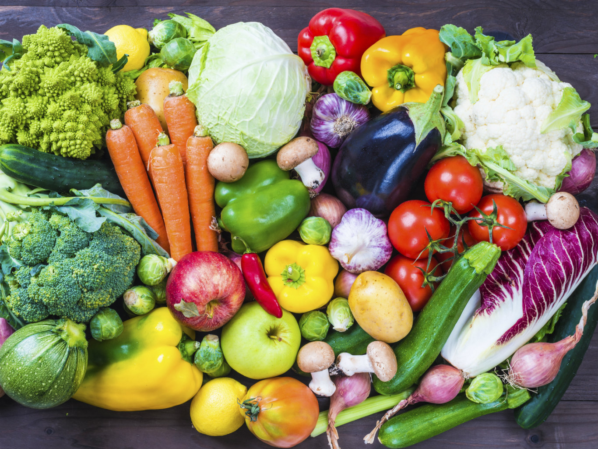

О пользе и вреде наиболее популярных овощей


В частности по материалам Сайта:
http://foodinformer.ru/products/ovoshi
Овощи – один из главных источников витаминов. И не только, это еще и куча углеводов, органических веществ, полисахаридов и минеральных элементов. Польза овощей очевидна, однако мало кто задумывается об их вреде. Польза и вред овощей – тема множества дискуссий.
Овощи поставляют в наш организм кальций, калий, фосфор, магний и множество других полезных веществ. Польза овощей заключается в благоприятном воздействии и на процесс пищеварения – в них содержатся эфирные масла, которые, влияя через обоняние, способствуют выделению пищеварительных соков. Они, в свою очередь, помогают переваривать организму более тяжелые продукты – мясо или рыбу. Именно поэтому любое лечебное питание не обходится без овощей.
Многие употребляют в пищу овощи для поддержания фигуры или похудения, при этом совершенно не прислушиваются к своему организму. Основной вред овощей – индивидуальная непереносимость и реакция на различные заболевания. Так, к примеру, свежие огурцы противопоказаны обладателям гастрита, а свеклу не стоит кушать при мочекаменной болезни. Таким образом, некоторые овощи могут быть полезны для одного организма, но совершенно противопоказаны другому.
Но не стоит забывать, что вред овощей может обернуться и в положительную сторону. Те же огурцы, которые некоторым нельзя употреблять в сыром виде, способны омолаживать лицо – маска из свежих огурцов полезна для всех. Польза и вред овощей – понятие индивидуальное. Всего-то нужно научиться слушать свой организм.
- | Артишок.
- | Лук-порей.
- | Маринованные огурцы.
- | Цветная капуста.
- | Репчатый лук.
- | Маслины.
- | Оливки.
- | Болгарский перец.
- | Тыква.
- | Морковь.
- | Баклажан.
- | Спаржа.
- | Пекинская капуста.
- | Зеленый лук.
- | Огурцы.
- | Красный перец.
- | Помидор.
- | Редис.
- | Свекла.
- | Капуста.
- | Чеснок.
- | Хрен.
- | Картофель.
- | Укроп.
- | Репа.
- | Шпинат.
- | Кабачки.
- | Редька.